Three scenarios to produce basic croissants, sandwich bread and burger buns. Version A fits in the existing 14 m2 bakery, without a refrigerator. Version C, at 17.7 m2, takes 1 m from the Meat area and includes the refrigerator. Version B takes over the whole Meat area, with bigger machines. Tap a sheet to open it full size.
Open the full PDF (12 sheets) Version française4,750 × 3,000 mm. No wall touched. A single oven: Krystal 46.9V convection, 40 L spiral mixer, 1-trolley proofer, bench sheeter, divider-rounder, flour table, hand basin. The refrigerator does not fit without blocking a workstation. Production: about 75 to 125 kg of dough a day (page 11).
5,890 × 3,000 mm. Same machines as A, plus the refrigerator, with clear aisles. One wall to break (~140 mm), a new partition at 5,890 mm, 1 m taken from the Meat area. Same production as A (page 11).
8,890 × 3,000 mm. Bakery + Meat area. Bongard rotary oven 1,440 × 1,880 mm + Krystal convection, 80 L spiral mixer, sheeter on stand, HERA-C proofer, water chiller, freezer and refrigerated cabinets, table, hand basin. Bigger machines: 145 to 290 kg of dough a day depending on the proofer (page 11).
The wall of about 140 mm between Bakery and Meat area, over the full 3,000 mm depth. The north, west, south and east partitions stay. The 1,190 mm opening onto Cooking is the only entrance; the 1,000 mm one on the east is closed.
In C, a new partition closes the Meat area reduced to 3,000 mm. Two points to settle in B: the Meat area disappears and its equipment must be relocated, and the nature of the wall (load-bearing or not) is not shown on the plan, to be validated before breaking it.
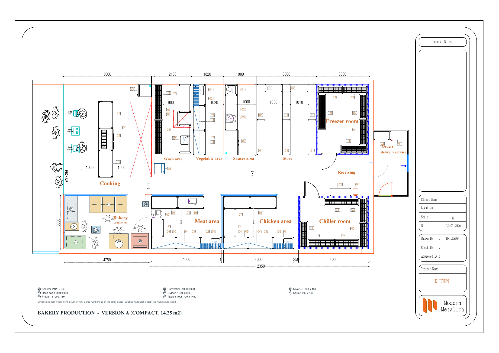
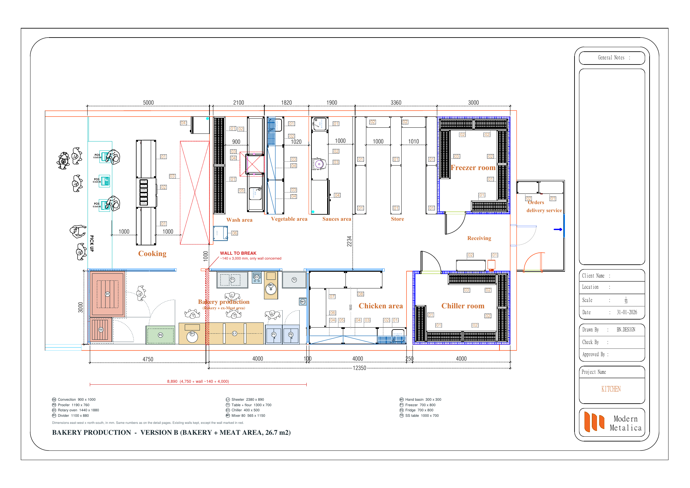
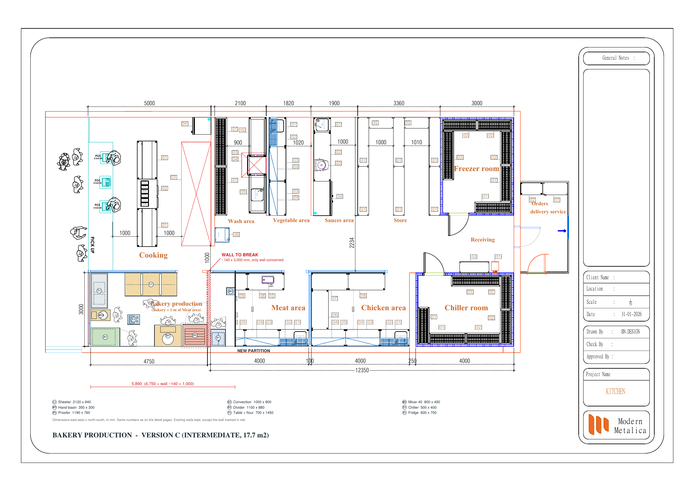
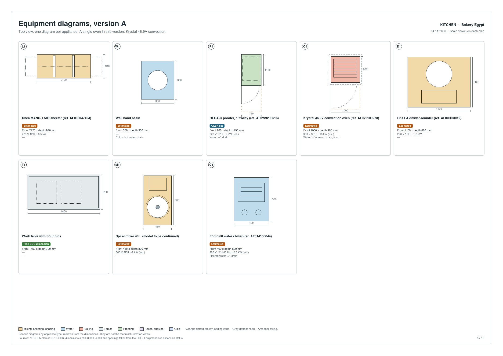
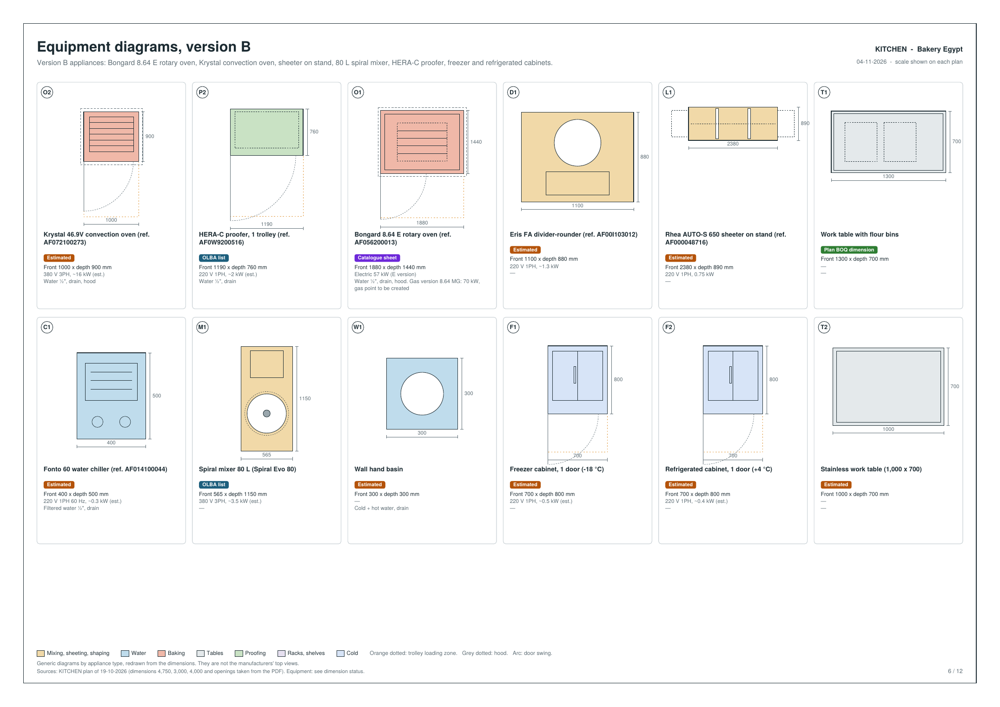
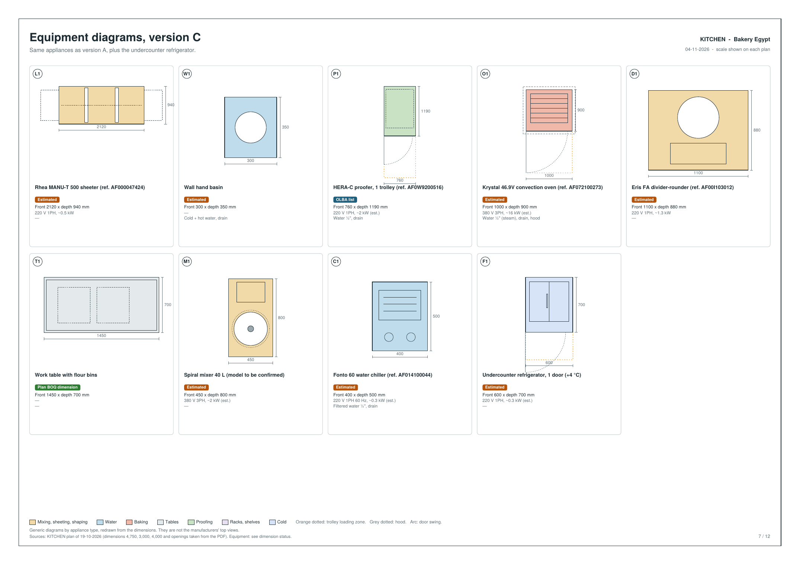
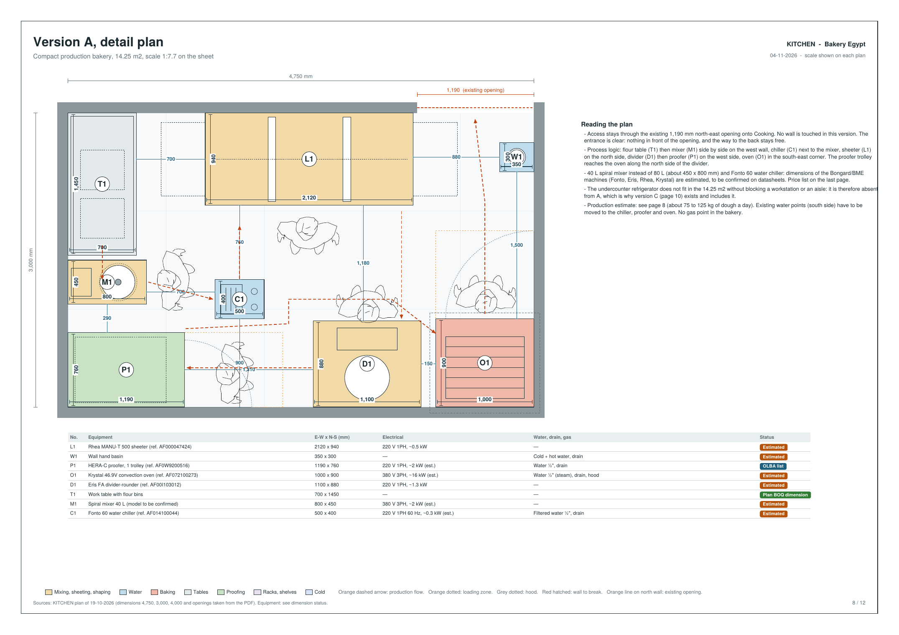
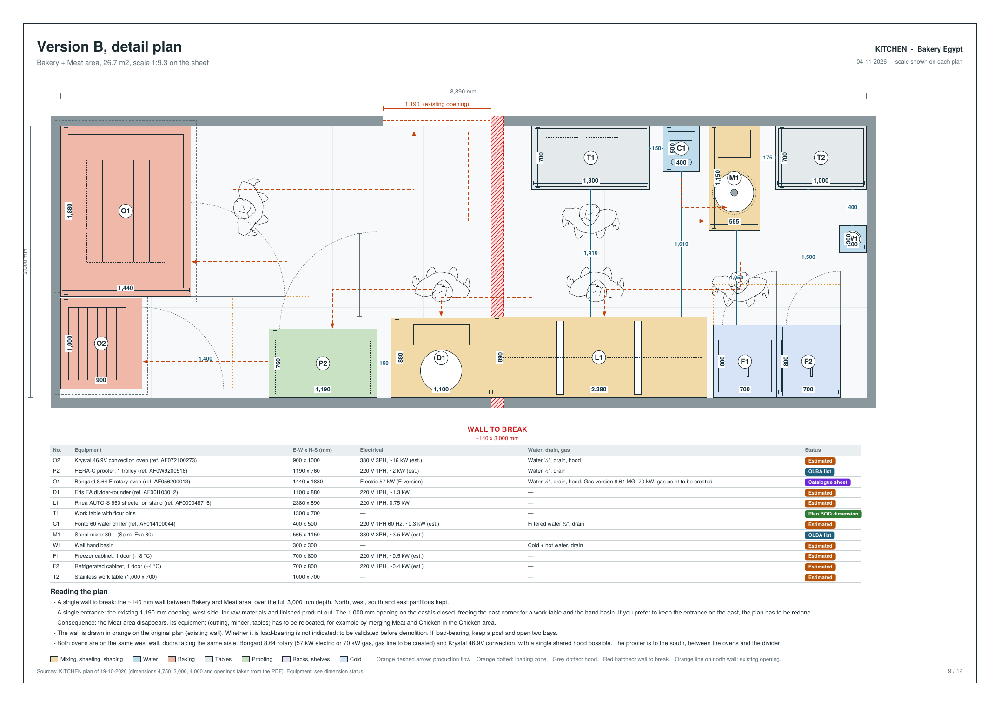
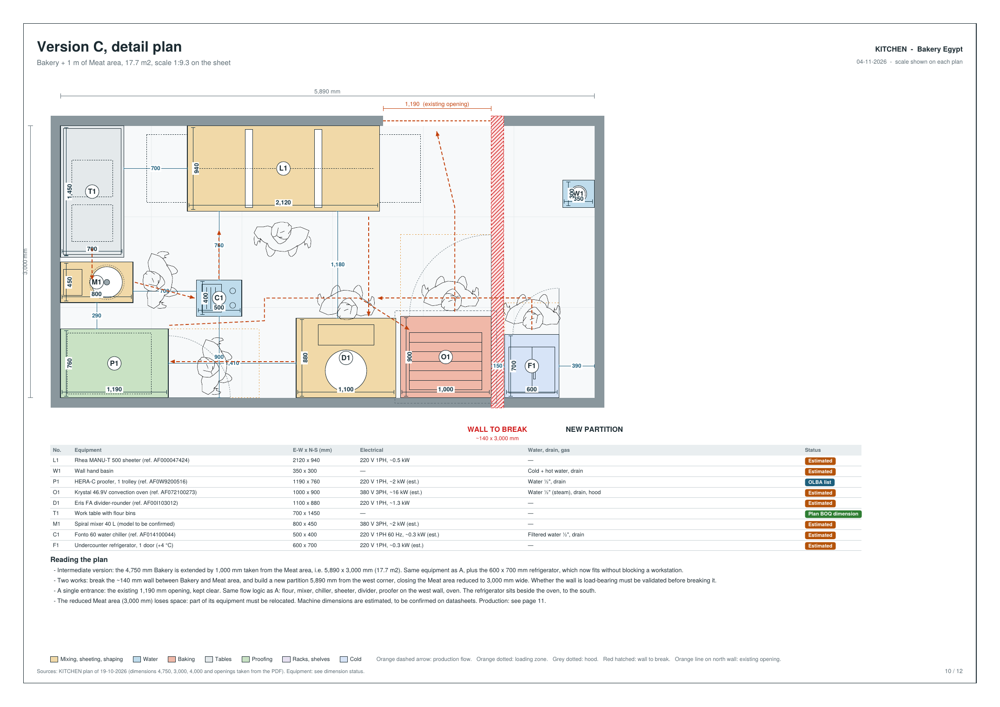
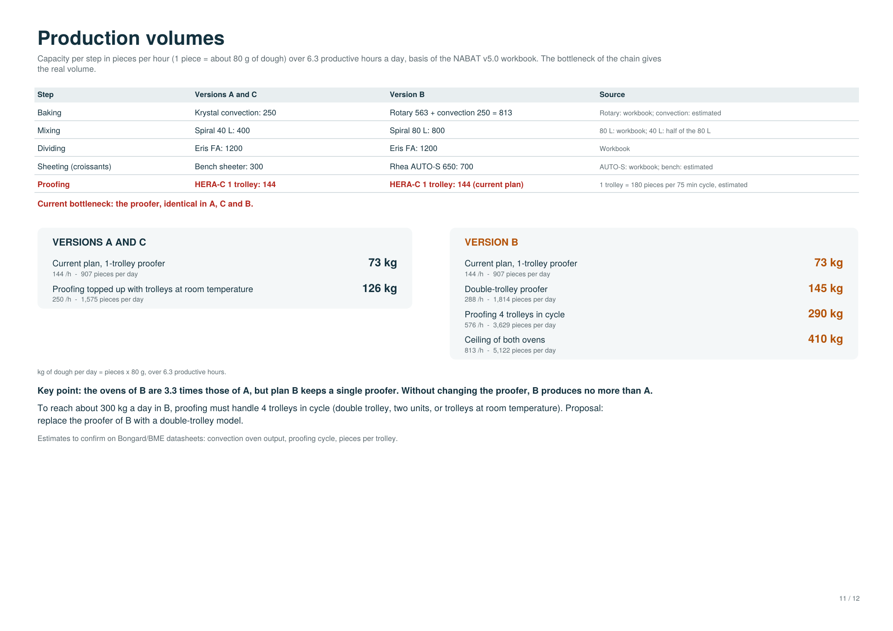
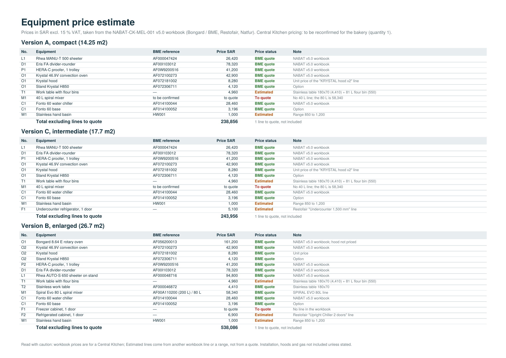